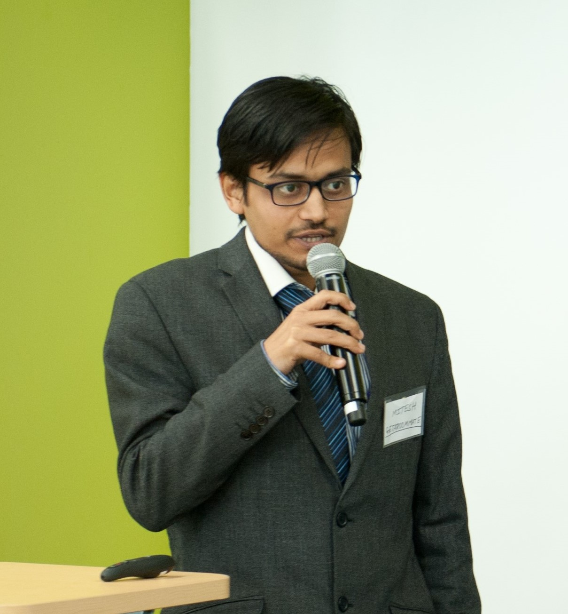

EiR seeks to connect students with experienced industry professionals. We facilitate the sharing of information that is needed to smoothly transition from academia to industry. We offer engineering students the opportunity to be mentored by our network of engineers and professionals through one on one meetings and events.
You can use our program to find mentors or find general guidance in an industry or field that interests you!
Contact Us
Jan Moye
Jan Moye is the Founding Principal at https://www.moyeconsulting.com/. Jan has a background in Computer Science and founded her own company developing IT solutions.
Availability: Case by case basis
Klyne Smith
Dr. Klyne Smith has more than 25 years of IT and Telecommunications experience in complex solution delivery, business development, IT consulting and project management. Dr. Smith completed his Doctor of Engineering degree from Southern Methodist University, with a concentration in Software Engineering.
Availability:
Monday’s 12pm-1pm (can be available)
Wednesdays 1030am – 130am (office hours)
Monday’s 1pm-2pm (can be available)
Thursday’s 12pm-1pm (can be available)
Bhargavi Nisarga
Bhargavi Nisarga is a systems engineer for Connected MCUs at Texas Instruments. Bhargavi graduated from University of Florida with an MS in Electrical Engineering and then joined TI as an Applications Engineer for MSP430 MCUs. Bhargavi has over 10 years of industry experience with 16-bit and 32-bit ultra-low power MCUs and has a broad background in embedded system solutions for varied application markets. She is currently focusing on security for next generation connected microcontrollers for the expanding IoT market. Bhargavi is regarded as an expert in MCU system applications and has authored several application notes, white papers and conference presentations.
Bhargavi lives in Dallas with her husband and two kids. She enjoys hiking, travelling and spending time with family.
Bob Landers
Mr. Bob Landers is a systems and applications engineer with a broad background in Embedded microcontrollers, digital architecture and IP, with experience in MCUs and ASICs in Industrial and High-reliability markets spanning 30 years in the semiconductor industry.
Specialties:
Embedded Software
Microcontrollers
HW Architecture
Technology competitive analysis
Patenting & IP assessment
Amanda Posadas
Amanda Posadas received her Bachelor of Science in Mechanical Engineering from New Mexico Institute of Mining and Technology (NMT) in 2011. Amanda continued her education, earning her Master’s in Systems Engineering from the University of Texas at El Paso (UTEP). Throughout her schooling she held student jobs as a machine shop drafter, department research assistant for Lockheed projects, and a city engineering and construction management volunteer. In 2013 Amanda joined AT&T through the Technology Development Program for Software Engineering. Amanda has filled several roles within AT&T. She began as a Systems Engineer focusing on writing design requirements for graphical user interfaces and dashboards to monitor the performance of device in the AT&T network. She skill pivoted to a Business Analyst and worked with the security office for threat detection. She is currently a program manager for AT&T’s Chief Data Office’s Talent Development. Amanda believes in continual education and is currently taking part in technical mentoring to learn programing basics and learn more about data science. Outside of work Amanda has been involved with the Society of Women Engineer. Amanda has served as section representative for four years and is was most recently the VP of Membership for the Dallas section.
Mitesh Khadgi

Mitesh Khadgi has 7 years of professional experience working as a Software Engineer at Intel Corporation, Founder/Entrepreneur at Senseheed Pvt. Ltd., GetARoommate and other small-scale startup companies with demonstrated interests in non-profit organizations such as IEEE, Make A Difference. Khadgi is the Founder & President of a Student Organization at UTD which goes by the name - "Trace Assist for Disabilities" (TAD), which develops various products to help patients improve their lifestyle. Khadgi has been a member of IEEE for the past 8 years. Khadgi was recognized by the IEEE for successful completion of the initiative to mentor undergraduate student projects and was promoted to the position of Executive Committee Member in the IEEE Consumer Electronics Society. Khadgi is a Senior member of The Indus Entrepreneurs (TiE), India and also a very active and enthusiastic volunteer of the US India Chamber of Commerce (USICOC). Khadgi has completed his Bachelor/Master’s degree from the Indian Institute of Technology (IIT), Madras, India.
Kyle Lambert
As a professional engineer with 25 years of experience, Mr. Lambert’s career has primarily been focused in the engineering consulting and professional services sector. Lambert has a diverse background in the architectural/engineering/construction industry and has participated in a wide range of industry sectors such as higher education, energy services, healthcare, military, manufacturing, commercial and federal. He has had many roles from engineer-in-training, lead design engineer, project manager, program manager, operations manager, commissioning director and business development lead. For a brief time, Mr. Lambert owned his own company as a sole proprietor and independent contractor. He is currently a commissioning and business development manager at Burns & McDonnell Engineering Company (https://www.burnsmcd.com) located in Fort Worth, Texas and headquartered in Kansas City, Missouri.
In his current role, Lambert provides senior project management and technical leadership for the commissioning services group. As a commissioning professional, he helps clients, owners and facility operators with quality assurance testing of MEP systems during design, construction and acceptance of building projects. Lambert’s group routinely interfaces with all aspects of a vertical construction project and coordinates activities with owners, architects, design engineers, general contractors, trade contractors, facility O&M staff, vendors/suppliers and other code officials. His responsibilities also include business development, contract negotiation and client account management.
Kyle lives in southern Denton county with his wife and three kids. He graduated from Texas Tech University with a BS in Mechanical Engineering.
Claudio Arellano
Claudio received his Bachelor of Science in Electrical Engineering from UTD in 2014. Claudio has 6 years of professional experience as an Applications Engineer at Fairchild Semiconductor and ON Semiconductor. His primary focus has been in power electronics, ranging from offline travel adaptors to multiphase CPU/GPU power supplies. His current role is a mixture of applications and marketing as he is working to define, promote, and evaluate new devices as well as assist with customer design-ins.
Mentor recruitment
Engineer in Residence is currently in the process of confirming existing mentors and looking for more. Please check back with us later if you don’t see the right one for you. Many more will be made available soon. If you have a career related question, email us at eir@utdallas.edu and we will put you in touch with one of our non-confirmed mentors to answer your question.